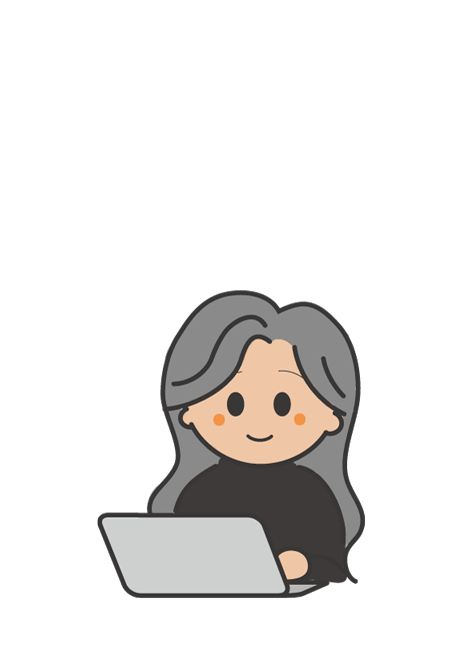
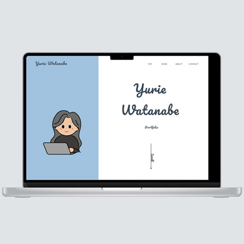
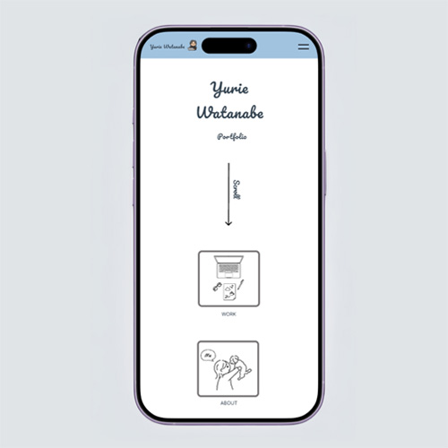

Webサイト, 課題制作
就職活動に向けた自己紹介および制作実績をまとめたポートフォリオサイトを作成しました。情報を整理し、自身のスキルや人柄が伝わるような構成を意識しました。
Webサイトをみる →短時間で多くの候補者をチェックする採用担当者に対し、自身の「スキルの深さ」と「制作に対する誠実さ」を、いかに直感的に、かつ論理的に伝えられるかが最大の課題でした。
作品の魅力を最大限に引き出すため、シンプルながらも個性が出るレイアウトを採用しました。
就職活動において、自身のスキルセットと制作プロセスを論理的に提示するためです。また、清潔感のあるデザインや遊び心のあるギミックを通じ、制作に対する誠実な姿勢と人柄を伝えることを目指しました。
Web制作会社や事業会社の採用担当者、および現場のディレクター・デザイナーの方々。
清潔感のある白をベースに、ネイビー（#394855）とライトブルー（#A1C2DF）を基調とした、冷たくなりすぎず、すっきりとした配色を採用しました。これにより「誠実な信頼感」と「親しみやすい透明感」の両立を目指しています。
特にお問い合わせページではUI（ユーザーインターフェース）を重視し、必須項目には視認性の高いオレンジ（#E67E22）、任意項目にはメインカラーに馴染むブルー（#7DA8CC）を配置しました。入力フォームの枠線（#E0E4E7）や誘導文（#95989A）には柔らかなグレーを用いることで、白背景の広がりを活かした清潔感を保ちながら、ユーザーが迷わず入力できる「おもてなし」の設計を施しています。
自分自身のブランドを確立し、これまでの学習成果を一つの形にするために制作を開始しました。
企画：1週間 / デザイン：1週間 / コーディング：1週間
WordPress / Illustrator / Photoshop / Figma